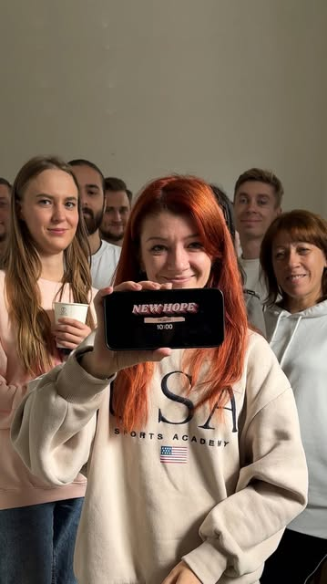
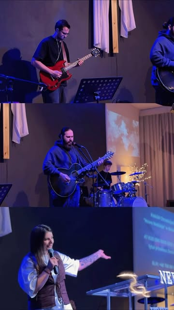
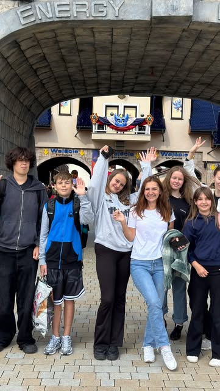
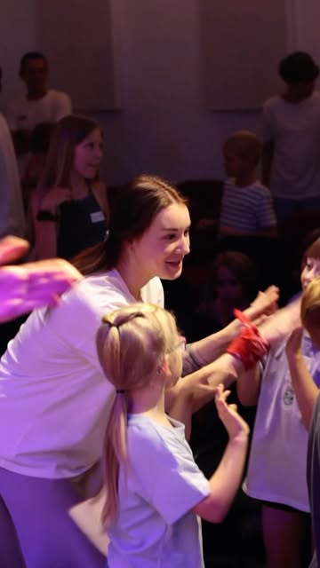
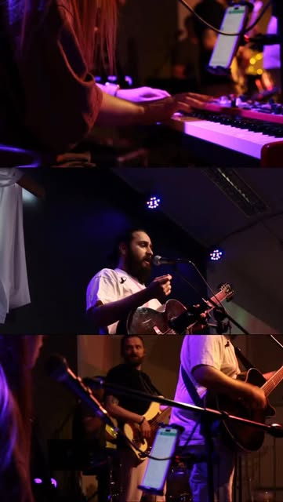
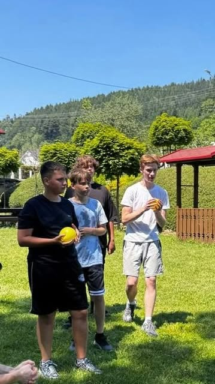
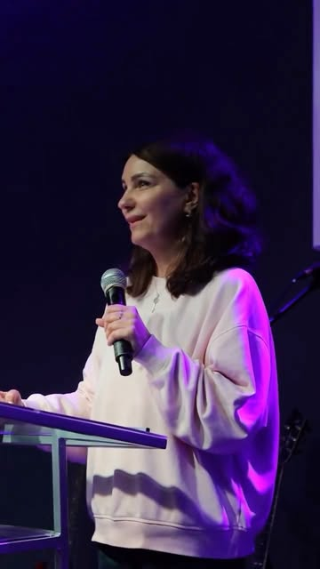
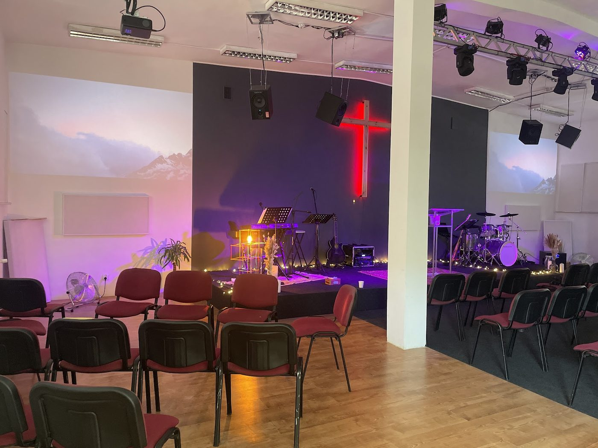

Недільна школа
Поки дорослі на служінні, діти вивчають Біблію через історії, ігри і творчість.
Християнська церква · Bielsko-Biała
Ми такі різні, але Бог об'єднав нас. Різні характери, історії та таланти — одне серце.







01 — Хто ми
Церква — це не просто місце, куди приходять по неділях. Це сім'я. Це дім. Місце, де ми разом шукаємо Бога і поклоняємося Йому.
New Hope — українська християнська церква в серці Бельсько-Бялої. Сюди приходять ті, хто вже давно з Богом, і ті, хто робить перший крок. Без дрескоду і без церемоній — з живим поклонінням і чесним словом.
Пастор церкви — Денис Непрокін. Ми віримо, що в Божій сім'ї є місце для кожного: для дітей і батьків, для молоді й старших, для тих, хто щойно переїхав до Польщі і шукає своїх.
02 — Неділя
Тебе привітають біля входу і допоможуть зорієнтуватися.
Жива музика і спів разом — сучасні пісні, щире серце.
Проповідь з Біблії — зрозуміло, про реальне життя.
Після служіння — час для розмов. Тут легко знайти друзів.
03 — Служіння
Поки дорослі на служінні, діти вивчають Біблію через історії, ігри і творчість.
Команда прославлення, що веде церкву в поклоніння. Співаєш чи граєш — долучайся.
Теплі зустрічі для подружжя і сімей: спілкування, молитва, підтримка.
04 — Кав'ярня
Після недільного служіння ми не поспішаємо додому. У церковній кав'ярні можна взяти каву, посидіти, поговорити і познайомитися. Саме тут новенькі найшвидше стають своїми.
Щонеділі після служіння · ul. Michała Grażyńskiego 20
05 — Подія
Два дні навчання, поклоніння і практики. Біблійні основи пророчого служіння, розпізнавання Божого голосу. Спікери — Максим та Юлія Білоусови.
06 — Життя церкви

07 — Як нас знайти
Міські автобуси MZK Bielsko-Biała. Час — прибуття на зупинку перед служінням о 10:00.
~35 м — просто біля входу
Напрямок Podwale Dworzec (з Hałcnów, Komorowice).
Прибуває о 9:15.
Назад від «Podwale Dworzec»: 11:38, 13:03
~350 м — 5 хв пішки
~400 м — 5–7 хв пішки
Зупинки «3 Maja Dworzec», «Warszawska Dworzec» — тут у неділю зупиняється більшість міських ліній. Поруч автовокзал.
Розклад може змінюватися — перевір актуальний на komunikacja.bielsko-biala.pl ↗ або в Jakdojade ↗